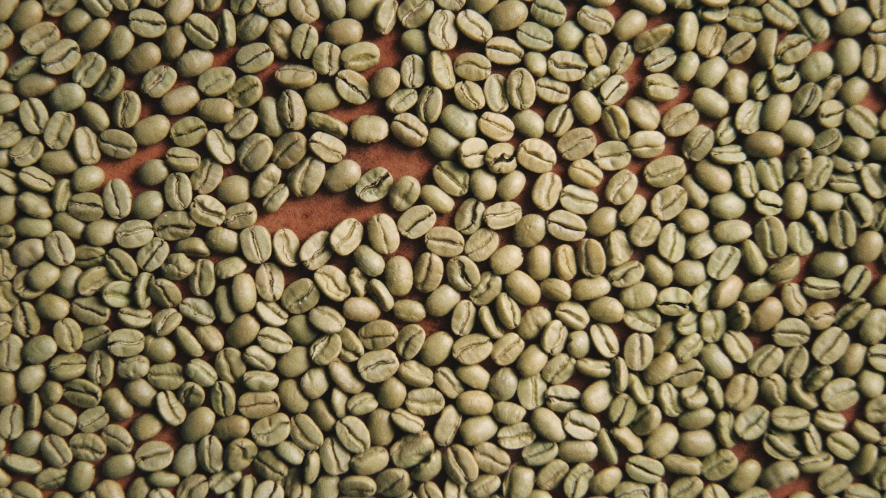
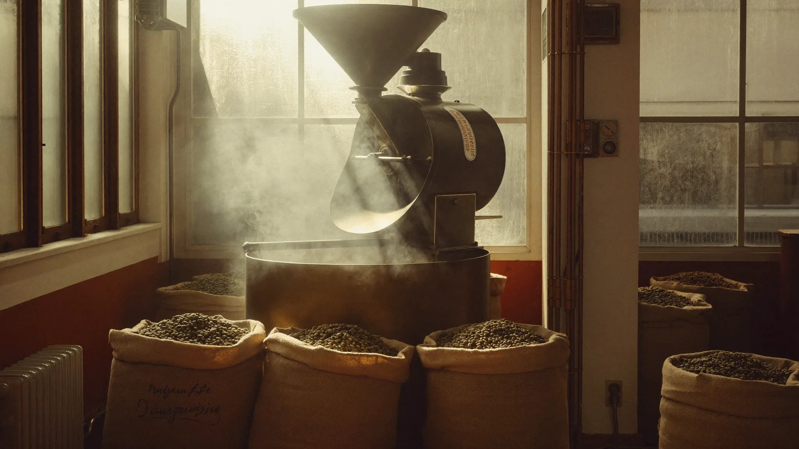
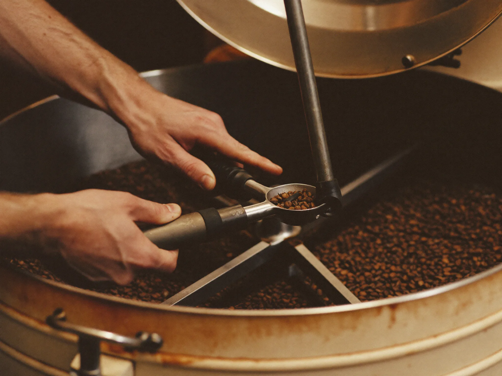
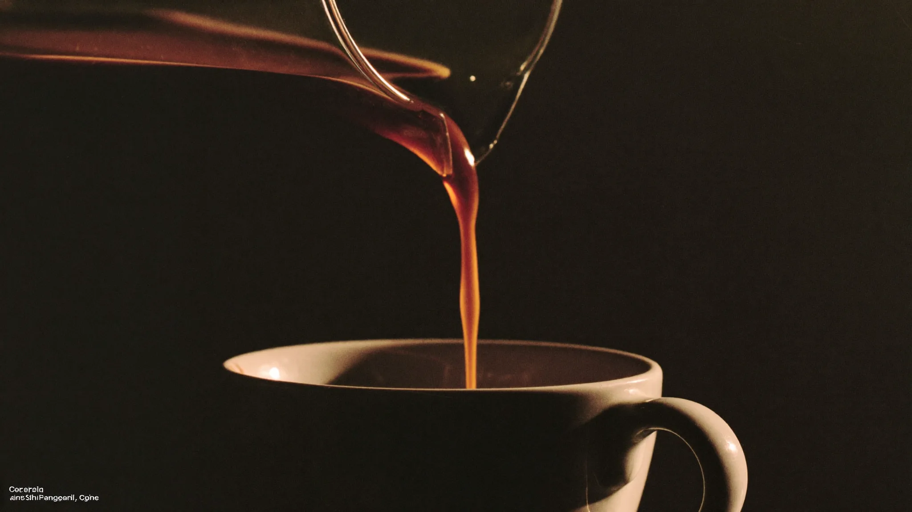
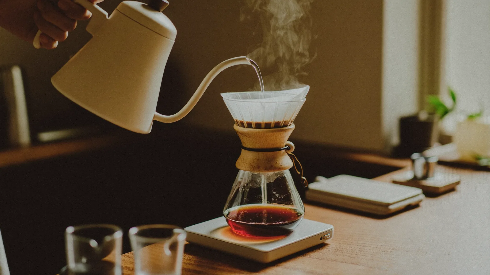
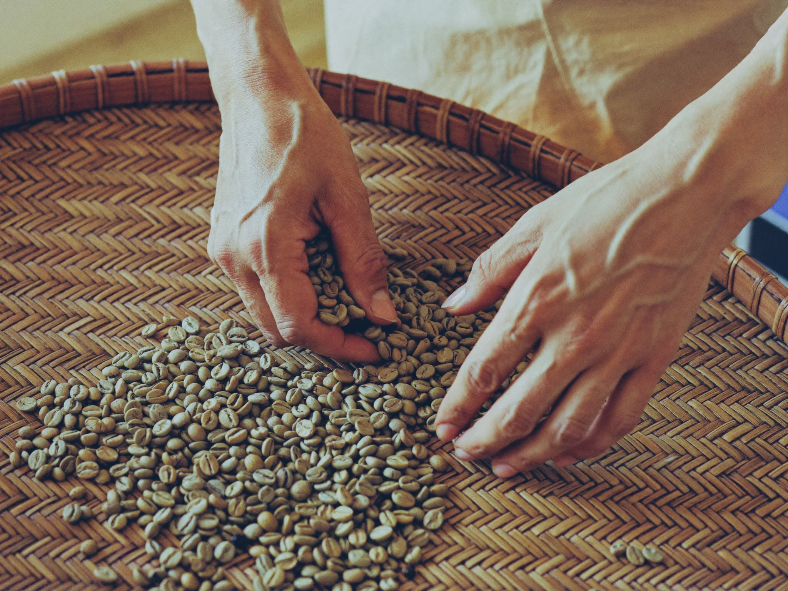

Roasted whereit grows.
Single origins from Gayo, Kintamani and Toraja, roasted in Jakarta and shipped worldwide days after first crack.

Three islands,three profiles.

Short journeysmake honest coffee.
Most Indonesian lots travel eight thousand kilometres to be roasted, then eight thousand back. Ours travel across town. We buy directly from fourteen producing families, roast small batches in Danau Sunter, and ship the same week.
From farm gateto your door.
Source
Harvest lots cupped at origin with the producing family, priced above fair trade.
14 partner farmsRoast
Small 12 kilogram batches on a 1974 Probat, profiled per lot, never blended away.
first crack at 196°CRest
Beans degas for five to seven days before any bag is sealed. Peak flavour, not fresh hype.
valve sealed at day 6Ship
Worldwide in recyclable packs. Roast date printed on every bag, always under two weeks old.
tracked, 3 to 8 days
Every batch is cupped the morning after roasting. If it does not match the lot profile we sell it as staff coffee, not as yours.

"The Gayo lot outperformed coffees we pay a third more for. It has become the espresso our regulars ask about."Nadia Rahmani · Head of Coffee, Fold & Filter, Melbourne
Taste the short journey.
Freshly roasted lots ship every Monday and Thursday from Jakarta.
Shop beansFour lots,nothing hiding.
Every bag carries its farm, altitude, process and roast date. If a lot runs out, it is gone until next harvest. We do not stretch a season.
Gayo Atu Lintang
Orange peel · panela · cacao nib
Grown by the Bahagia cooperative around Atu Lintang village. Wet hulled the traditional Sumatran way, which gives it that deep, earthy sweetness and a body that carries through milk. Our workhorse espresso.
Kintamani Ulian
Lemon zest · cane sugar · white florals
From subak abian gardens on the slopes above Lake Batur, where coffee grows between orange trees. Fully washed for a clean, bright cup that rewards a careful pour over. Our lightest roast.
Toraja Sapan
Dark plum · brown spice · cedar
Picked in the high valleys around Sapan, north Toraja, and semi washed to keep its signature weight. Syrupy, spiced and long. The cup we reach for after dinner, brewed slow on a French press.
Seasonal: Flores Bajawa
A small honey processed lot from the Ngada highlands, here until roughly September. Ripe mango, milk chocolate, a soft floral finish. When the last bag ships, that is the season.
Brew it the waythe farm intended.
Three methods cover every lot we roast. Recipes below are our roastery bar's daily settings; adjust grind before anything else.

V60 pour over
Best for Kintamani Ulian and the seasonal Flores. Clarity over body.
Rinse and dose
Rinse the paper thoroughly, then dose 15 g ground slightly finer than sea salt into the cone.
Bloom
Pour 45 g of water, swirl once, and wait 40 seconds while the fresh roast degasses.
Two pours
Pour to 150 g in slow circles, pause 20 seconds, then finish to 225 g down the centre.
Drawdown
A flat bed by 2:45 means the grind is right. Muddy and slow, go coarser. Fast and hollow, go finer.
French press
Made for Toraja Sapan. The long steep builds that syrupy finish.
Coarse and hot
Dose 30 g ground coarse, like raw sugar, and pour 420 g of water in one confident stream.
Leave it alone
No stirring, no plunging yet. Let it steep for a full four minutes with the lid off.
Break and skim
Break the crust with a spoon, skim the foam, then wait another four minutes for the fines to settle.
Pour, do not plunge
Press the mesh just below the surface and pour gently. The bed stays behind, the silt stays out of your cup.
Espresso
Dialed for Gayo Atu Lintang. It shines through milk without disappearing.
Dose and distribute
18 g in, levelled with a light tap. Fresh roasts run fast, so start one notch finer than usual.
Pull to weight
Stop the shot at 36 g out. Aim for 25 to 30 seconds from the first drop, not from the pump.
Taste before milk
Sour and sharp, go finer. Bitter and hollow, go coarser. The panela sweetness should sit mid palate.
For milk drinks
Keep the same shot and steam to 55 to 60°C. The cacao nib note is what cuts through a flat white.
Arus means current. Coffee has always moved through this archipelago; we just shortened the route.

Arus started in 2019 as a Saturday cupping table in a Danau Sunter garage, buying single sacks directly from a cousin's farm in Gayo.
Seven harvests later we work with fourteen producing families across three islands, pay above fair trade at the farm gate, and roast everything ourselves on a rebuilt 1974 Probat. The garage is now the roastery. The cupping table is still the same table.
We stayed small on purpose. Every lot is bought by someone who has stood on that farm, and every batch is approved by the person who roasted it.
What we hold to.
Producing families
Direct relationships, visited every harvest, priced at the farm gate above fair trade minimums.
Harvests together
The same farms since 2019. Consistency in the cup starts with consistency in who we buy from.
Kilograms per batch
Small enough that a single roast profile fits a single lot. Nothing gets averaged into a house blend.